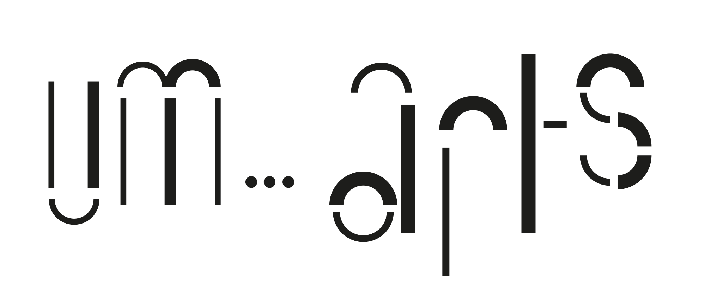

Fully animated logo to be used sparingly—such as on homepage and as ident for video material
Simple Logo

Basic version of the logo—when used on web has very subtle animation of the ellipsis
Skeletons
A desktop first site using 4 columns which will go gracefully go down to two column then one column based on screen size. Header always in the left hand side and will move out of the way on pages that require more focussed attention such as videos and exhibitions.